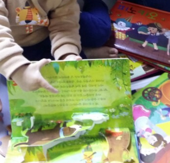
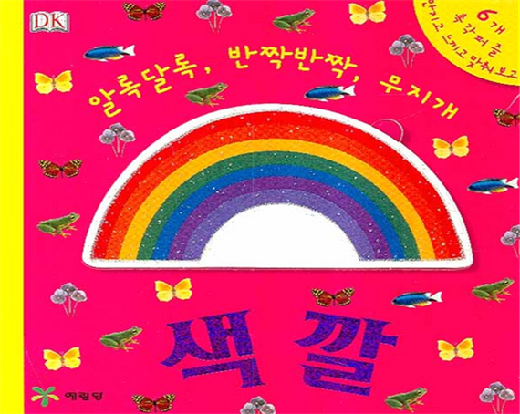
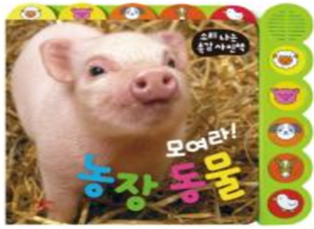
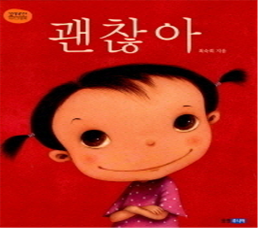
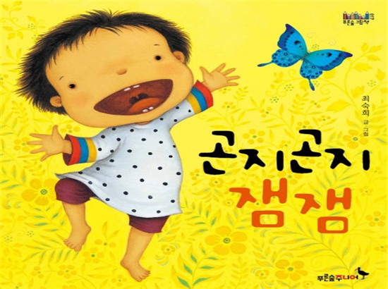

인지발달과 아동문학
영아는 감각경험과 신체발달을 통하여 뇌의 성장과 발달이 놀라운 속도로 대상영속성이 향상되어 간다. 특히 청각능력은 성인 수준을 갖게 되어 간단한 명령을 듣고 반응과 함께 언어능력이 발달하기 시작하며, 2개월경에는 주변의 모든 것이 어렴풋하게 흑백으로 보이나 3~4개월이 되면 빨간색, 노란색, 파란색의 기본색을 구별할 수 있어 성인과 거의 비슷한 정도의 색지각 능력이 나타낸다(Adams & Courage, 1995). 형태를 지각하는 능력이 발달하며 대조적인 패턴을 선호한다.

영아는 매일 주변에서 볼 수 있는 모든 사물이 무엇인지 생각하게 하고, 명료화하고 단순한 단어를 반복적으로 나타내는 패턴을 지각하게 된다. 영아의 인지발달에 적합한 그림책 예를 들면, 대상 영속성이 발달하고 책의 내용에 관심을 가지기 시작할 때 ‘알록달록, 반짝반짝, 무지개 색깔’에서는 다양한 동ㆍ식물들 등의 색깔을 촉각 퍼즐을 만지고 느끼고, 넣다, 뺐다 등의 활동을 향상시킬 수 있게 기획된 촉감 그림책을 좋아한다.

‘까꿍놀이’는 다양한 동물 친구들의 사랑과 애정의 표현을 엿보는 동시에 촉감으로 이해할 수 있도록 구성된 책이다. ‘모여라 농장 동물’은 동물들의 사진과 소리를 들을 수 있고 손끝으로 촉감을 경험해 볼 수 있도록 인지능력과 조작력, 통합적 사고력을 개발하는데 유익한 작품이다.

사회성발달과 아동문학
영아들은 양육자와 기본적인 신뢰감을 형성해 나가기 시작한다. 애착형성으로 나타나는 낯가림(stranger anxiety)과 분리불안(separation anxiety)으로 인간관계의 기본적인 신뢰감을 형성한다. 낯가림은 6~7개월경부터 자연스럽게 보이기 시작하여 8~12개월경에 가장 심해지다가 점차 약해진다.
애착 대상자와 헤어질 때 보챈다거나 우는 행동을 나타내는 반응은 영아의 기질이나 환경요인에 따라 다르지만 친숙한 얼굴과 낯선 얼굴이 불일치함을 의미하는 불안 반응이다.
이자드(Izard, 1978)에 의하면, 선천적으로 세계 모든 문화권의 영아에게서 보편적으로 볼 수 있는 기본적인 정서로 생후 8개월 전후하여 출현하는 기쁨, 공포, 분노, 불안 등도 나타난다고 주장했다. 이 시기의 정서는 얼굴 표정, 응시, 단순한 손가락 놀이, 말의 속도 등과 같은 사회적 교감에 민감하게 반응하는 것은 정서 상태와 밀접하게 연결되어 있기 때문이다.

영아의 사회 · 정서발달에 적합한 그림책 예를 들면, ‘곤지곤지 잼잼’은 아기가 울음을 터뜨리자, 동물들이 나서서 아이의 마음을 달래주고 함께 놀아주는 표현이 세심하게 글과 그림으로 사랑스럽게 나타냈으며, ‘괜찮아’를 통하여 양육자와 분리되는 불안에 대처하고 안정된 사회, 정서적 교감을 형성하도록 안내한다. ‘푹신푹신, 아이 졸려!’는 책을 만지면서 촉감에 대한 다양한 감각을 익힐 수 있도록 익숙한 대상들을 단순하고 밝은 그림으로 볼 수 있는 작품이다.

참고자료
김영애, 선애순, 정효정(2018). 영유아발달. 양서원
박성연(2010). 아동발달. 교문사.
정옥분(2013). 영아발달. 학지사.
김동례, 권순황, 선애순(2018). 아동문학. 공동체.
2022.02.06 - [분류 전체보기] - 분리 불안과 불안 심리의 차이 - 낯가림, 애착, 두려움과 공포
분리 불안과 불안 심리의 차이 - 낯가림, 애착, 두려움과 공포
분리불안과 불안의 의미 분리불안(separation anxiety)이란 발달과정과 일상생활의 적응 정도에 따라 아이들에게 흔히 나타나는 증세이다. 최초 어머니상(primary mother-figure)의 상실감에 따른 공포증은
think-sis.co.kr